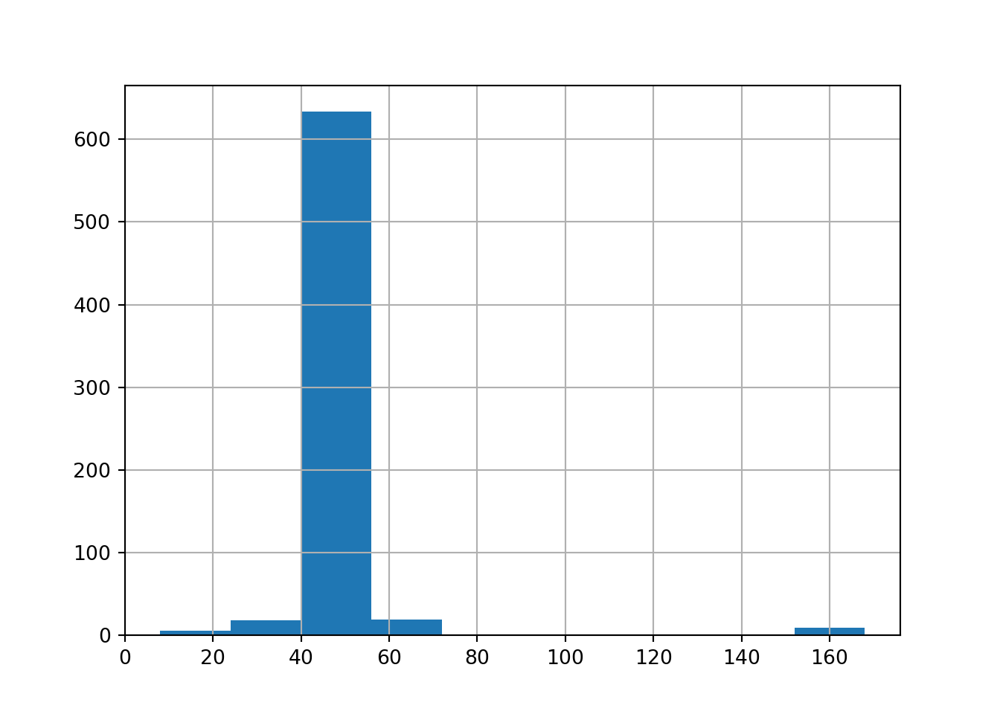
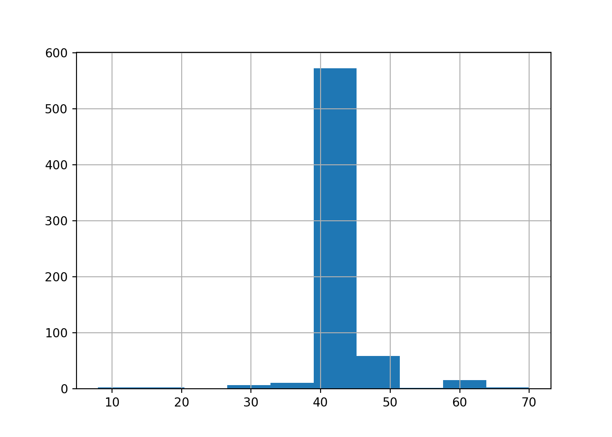

10 Egymintás és Kétmintás próbák
10.1 A szórásra vonatkozó \(\chi^2\)-próba
Vegyük elő újra a ESS2020.xlsx fájlban található adatbázist! Emlékeztetőül álljon itt, hogy ez az adatbázis a 2020-ban végzett európai szociális felmérés (European Social Survey 2020 = ESS2020) 1849 magyar kitöltöjének válaszait tartalmazza 14 kérdésre (plusz van egy id oszlop).
Ugyebár a 6.4. fejezet 2. feladatában azt mondtuk, hogy ha az adatbázis valamelyik oszlopában üres értéket találunk, akkor az azt jelenti, hogy az adott sorban lévő kitöltő nem válaszolt a kérdésre. Az adatbázisban szereplő kitöltők a teljes 18 év feletti magyar népességből vett véletlen mintaként kezelhetők.
Először is töltsök be az adatbázist ismét az Excelből egy pandas data frame-be és nézzük meg az info metódussal milyen oszlopaink (azaz ismérveink) vannak!
# Elemzéshez és ábrázoláshoz szükséges csomagok betöltése
import numpy as np
import pandas as pd
import matplotlib.pyplot as plt
import scipy.stats as stats
# Adatbeolvasás data frame-be
ess = pd.read_excel("ESS2020.xlsx")
ess.info()## <class 'pandas.core.frame.DataFrame'>
## RangeIndex: 1849 entries, 0 to 1848
## Data columns (total 15 columns):
## # Column Non-Null Count Dtype
## --- ------ -------------- -----
## 0 id 1849 non-null int64
## 1 PoliticalRadioTVPerDay_Minutes 1796 non-null float64
## 2 NetUsePerDay_Minutes 1099 non-null float64
## 3 TrustInParlament 1849 non-null object
## 4 PoliticalPartyPref 1849 non-null object
## 5 Education_Years 1830 non-null float64
## 6 WeeklyWork_Hours 685 non-null float64
## 7 Region 1849 non-null object
## 8 County 1849 non-null object
## 9 SecretGroupInfluenceWorldPol 1849 non-null object
## 10 ScientistsDecievePublic 1849 non-null object
## 11 COVID19 1849 non-null object
## 12 ContactCOVID19 1849 non-null object
## 13 GetVaccince 1849 non-null object
## 14 SomeContactCOVID19 1849 non-null object
## dtypes: float64(4), int64(1), object(10)
## memory usage: 216.8+ KBLáthatjuk, hogy megvan mind a 14+1 oszlopunk a megfelelő adattípusokkal. Hurrá! :)
Nézzünk most egy olyan hipotézisvizsgálatot, ami szórásra vonatkozik.
Lehet egy olyan állításunk, ami szerint a teljes népességben a heti munkaidő szórása legalább 15 óra. Ezt a szokásos elvek alapján át tudjuk alakítani null- és alternatív hipotézissé. Ez az álítás a ‘legalább’ kulcsszó miatt engedi az egyenlőséget (\(\geq\)), így az állítás maga egy \(H_0\) lesz. Míg a \(H_1\) ennek a tagadása lesz \(<\), hiszen a \(H_0\) és \(H_1\) egymást kizáró állításként kell megfogalmazni.
Tehát, ezek alapján az állítás a heti munkaidő sokasági szórásáról, a \(\sigma\)-ról az alábbi módon néz ki \(H_0\)-al és \(H_1\)-el:
- \(H_0: \sigma \geq 15\)
- \(H_1: \sigma < 15\)
- Szurkolunk: \(H_0\)
Ebben a felírásban az elvi szórásunk a \(15\) óra, hiszen a valós sokasági szórásnak a viszonyát ehhez képest vizsgáljuk majd a mintánk alapján. Ezt az elvi szórást \(\sigma_0=15\)-nek jelöljük.
Ezzel megvolnánk a hipotézisvizsgálatunk 1. pontjával, a \(H_0\) és \(H_1\) felírásával. Most ugrunk a 2. és igazából a 3. pontra is, a próbafüggvény meghatározásához, majd a p-érték számolásához. Szórás esetében a próbafüggvény a következő alakot ölti: \[\frac{(n-1)s^2}{\sigma_0^2} \sim \chi^2(n-1)\]
A \(\sim \chi^2(n-1)\) jelölés azt mondja, hogy a p-értéket egy \(n-1\) szabadságfokú \(\chi^2\) eloszlásból kell majd kiszámolnunk.
Sajnos, erre a próbafüggvényre és p-értékre nincs Python beépített függvény, így muszáj kiszámolnunk a dolgokat manuálisan!
Viszont, a próbafüggvényben minden betűt ismerünk. Ugye az előbb letisztéztuk, hogy a \(\sigma_0\) az elvi szórás, az \(n\) szokásos müódon a mintánk elemszáma és az \(s\) a korrigált (tehát torzítatlan becslést adó) mintaszórás. Ezeket az értékeket gyorsan ki tudjuk számolni. Az ESS adatbázisban a heti munkaórára vonatkozó adatai a kitöltőknek a WeeklyWork_Hours oszlopban laknak. Arra kell a számolásnél figyelni, hogy az ESS adatbázis info() metódusának eredményéből láthattuk, hogy ebben a WeeklyWork_Hours oszlopban van egy rakat hiányzó érték, így \(n\)-ünk az nem \(1849\) (data frame sorainak a száma), hanem csak \(685\). Ezt úgy tudjuk legkönnyebben figyelembe venni, hogy az \(n\)-t a WeeklyWork_Hours oszlop count() metódusával számítjuk ki, ami megadja az oszlopban a nem üres értékek számát.
## 15.375457568374705Láthatjuk, hogy a mintában a szórás \(s=15.37\), ami nagyobb mint a \(15\)-ös elvi szórás. De nem vehetjük automatikusan igaznak \(H_0\)-t, hiszen ez a jelenség lehet csak a mintavételi hiba műve! Épp azért kell p-értéket számolni, hogy megtudjuk, mekkora valószínűséggel lehet ez a jelenség (hogy a mintaszórás nagyobb, mint a 15-ös elvi érték) csak a mintavételi hiba műve.
Szóval, számoljuk csak ki ezt a próbafüggvényt! :)
## 718.6702741281487Szép és jó ez az érték, de önmagában nem sokat mond. :) Ugorjunk is a 3. pontra, a p-érték számítására. Ugye azt megállapítottuk már az előbb, hogy a p-értéket most \(n-1\) szabadságfokú \(\chi^2\) eloszlásból számoljuk. Plusz, mivel a \(H_1\)-ben \(<\) jel van, így a számítás balodali módon történik, azaz a \(\chi^2(n-1)\) eloszlásban a próbafüggvény alá esés valószínűsége érdekel. Az elv itt ugyan az, amit láttunk a 9.2. fejezetben.
Ezek alapján meg is van a p-értékünk a stats.chi2.cdf függvénnyel.
## 0.8263764489186204A p-érték = \(82.6\%\) lett, ami szerint a megfigyelt minta alapján a \(H_0\)-t elutasítani \(82.6\%\) hibavalószínűséggel jár. Ez jó magas hibavalószínűség így “szabad szemmel” is, de technikailag ha nézem, akkor ez a p-érték magasabb még a legmagasabb szokásos szignifikancia-szintnél, a \(10\%\)-nál is, így a \(H_0\)-t nem utasítjuk el, mert ez a döntés túl nagy hibával járna. Ez alapján pedig azt mondhatjuk, hogy a heti munkaidők szórása a teljes népességben (sokaságban) is legalább 15 órának kinéz.
Sajnos ennek a \(\chi^2\) próbának ugyan az a baja, mint a \(\chi^2\) eloszlásos intervallumbecslésnek volt a 7.5. fejezetben: A próba elvégézésének előfeltétele, hogy az adataink normális eloszlásúak legyenek. tehát, a számított p-értékünk, a \(82.6\%\), az akkor valid, ha az adatsor, aminek a szórását vizsgáljuk normális eloszlást követ.
Ezt egy hisztogrammal gyorsan ellenőrizni is tudjuk.

Ajjaj, a munkaórák eloszlása csúcsosnak tűnik, mint a fene. Ez így nem egy normális eloszlás, az előfeltételünk nem teljesül, a számított p-értékünk nem megbízható … BigRIP :(
Esetleg próbálkozhatunk az estrém outlier \(160\) óra kiszűrésével, hátha csak az okozza a csúcsosságot, de sajnos nem járunk sikerrel, ez a hisztogram az outlier szűrés után is elég csúcsos.

De amúgy ez nem meglepő: a legtöbb kitöltő valószínűleg a “standard” heti 40 órát (vagy ahhoz közeli értéket) adott meg válaszként, és ez okozza a csúcsosságot.
Amúgy, ez az előfeltétel az oka, hogy nincs erre a hipotézisvizsgálatra beépített függvény Pythonban: nagyon ritka, hogy egy adatsor szép normális eloszlású legyen, így a legtöbb esetben a próba nem megbízható, mivel a \(\chi^2(n-1)\) eloszlásból számított p-érték mögötti feltételek nem teljesülnek a legtöbb esetben.
Emiatt ritka, hogy a próba valid eredményeket produkál, így egy programozó sem kódolta le Pythonban, mert ritkán kell ez a hipotézisvizsgálat gyakorlatban. Mi is inkább “történelmi okokból” tanítjuk. Meg hogy minél több dolgot lehessen számonkérni. :)
10.2 A kétmintás hipotézisvizsgálatok elve
Az eddig tanult hipotézisvizsgálatok az átlagra, arányra és szórásra úgynevezett egymintás hipotézisvizsgálatok voltak. Ez azt jelentette, hogy egy db statisztikai mutató (egy db átlag, egy db arány vagy éppen egy db szórás) viszonyát vizsgáltuk valami elvi értékhez képest. Ez alapján fogalmaztuk meg az előfeltevéseinket, azaz hipotéziseinket.
Mostantól viszont úgynevezett kétmintás hipotézisvizsgálatokkal vagy más néven kétmintás próbákkal foglalkoznunk. Ez pedig azt fogja jelenti, hogy a hipotéziseinkben (előfeltevéseinkben) mindig két db statisztikai mutató (két db átlag, két db arány, stb.) viszonyát vizsgáljuk majd egymáshoz képest.
Tehát, ha példának az átlagot veszem, mint statisztikai mutatót, akkor egy olyan kétmintás állítást mondhatok, hogy “a férfi átlagfizetés magasabb, mint a női átlagfizetés Magyarországon”.
Kicsit matekosabban felírva: Átlagfizu(Férfi) > Átlagfizu(Nő)
Azért lesznek az ilyen két statisztikai mutatós állításokhoz tartozó hipotézisvizsgálatok kétmintás próbák, mert az a logika, hogy 1 db mintánka van a férfi átlaghoz és 1 db mintánk van a női átlaghoz. Tehát, összességében 2 db mintával dolgozunk. :)
A kérdés, hogyan lesznek ezekből a kétmintás állításokból null- és alternatív hipotézisek. A trükkünk az, hogy átrendezzük az állítást leíró egyenlőtlenséget úgy, hogy a két statisztikai mutató KÜLÖNBSÉGÉNEK a viszonyát vizsgáljuk egy elvi értékhez képest. Ez az elvi érték lesz az elvi eltérés, általában \(\delta_0\)-nak jelöljük. Arányok esetében néha szokás \(\epsilon_0\)-t is használni az elvi eltérés jelölésére.
Az előbbi átlagfizetéses példában, ha a sokasági átlagokat továbbra is \(\mu\)-vel jelölöm, mint a korábbi hetek tananyagaiban, akkor az átrendezett állítás a következő lesz: \[\mu_{Férfi} - \mu_{Női} > 0\]
És akkor itt \(\delta_0=0\) esetünk van. Ebből az eddigi elvek mentén lehet a különbségre felírni \(H_0\)-t és \(H_1\)-et:
- Ha az állítás megengedi az egyenlőséget, akkor az \(H_0\), egyébként \(H_1\)-be megy.
- A \(H_0\) és \(H_1\) egymást kizáró, ellentétes állítások.
Szóval, a férfi-női átlagkeresetes példánkon a \(H_0\) és \(H_1\) állítások a következők:
- \(H_0:\mu_{Férfi} - \mu_{Női} \leq 0\)
- \(H_1:\mu_{Férfi} - \mu_{Női} > 0\)
- Szurkolunk: \(H_1\)
Nézzünk egy olyan példát, amikor a \(\delta_0 \neq 0\)! Legyen az az állításunk, hogy “a férfi átlagkereset legalább 100 ezer Ft-tal magasabb, mint a női”. Ekkor azt csináljuk, hogy első körben írjuk fel úgy az állítást, mintha csak annyi lenne, hogy “a férfi átlagkereset legalább annyi, mint a női”. Tehát, mintha a különbségre adott számértékünk (a 100 ezer Ft) ott sem lenne. A “legalább” kifejezés miatt ez egy \(\geq\)-s állítás lesz: \[\mu_{Férfi} \geq \mu_{Női}\]
És ezt a fenti egyenlőtlenséget egészítsük úgy ki, hogy belevesszük a 100 ezer Ft-os különbséget. A “férfi átlagkereset legalább 100 ezer Ft-tal magasabb, mint a női” azt jelenti másképpen, hogy ha a női átlagkeresethez még 100 ezret hozzáadok, akkor is nagyobb vagy egyenlő ennél a férfi átlagkereset. Ez a megfogalmazás pedig alábbi módon néz ki az egyenlőtlenségünkben: \[\mu_{Férfi} \geq \mu_{Női} + 100\]
Innentől kezdve megvan az állításom, amit már könnyű átrendezni úgy, hogy azt vizsgálja az egyenlőtlenség, hogy az átlagok különbsége hogyan viszonyul valami elvi, \(\delta_0\) eltéréshez, ami most nekem a 100-as érték: \[\mu_{Férfi} - \mu_{Női} \geq 100\]
Tehát, ebben az állításban akkor \(\delta_0=100\). És ezt az állítást a szokásos két alapelv mellett már gyorsan tudom \(H_0\)-ra és \(H_1\)-re szétszedni. Mivel az állítás engedi az egyenlőséget most, így az állításunkból egy nullhipotézis lesz, és az alternatív hipotézisben ezt az állítást meg tagadjuk, és vélgül a \(H_0\)-nak szurkolunk, mert abban lakik az eredeti állításunk:
- \(H_0:\mu_{Férfi} - \mu_{Női} \geq 100\)
- \(H_1:\mu_{Férfi} - \mu_{Női} < 100\)
- Szurkolunk: \(H_0\)
Akkor, lássuk hogy működik a kétmintás \(H_0\) és \(H_1\) párokhoz a p-érték számolás pár gyakorlati példán! :)
10.3 Az átlagokra vonatkozó kétmintás z-próba
Az ESS adatbázis SecretGroupInfluenceWorldPol és Education_Years című oszlopait felhasználva ellenőrizhetünk egy olyan állítást a teljes magyar népességre (azaz sokaságra), ami szerint “átlagban jobban iskolázottak (több évet töltöttek tanulással), akik nem hisznek abban, hogy egy titkos társaság irányítja a világpolitikát”.
Ezt az alááítást úgy írhatjuk fel matematika egyenlőtlenségként mint \(\mu_{NemHisz} > \mu_{Hisz}\). Ha ezt az állítást az átlagok különbségére rendezzük át, akkor a \(H_1:\mu_{NemHisz} - \mu_{Hisz} > 0\) egyenlőtlenséget kapjuk. Ez alapján pedig már látjuk is, hogy az átlagok elvi eltérése a sokaságban \(\delta_0=0\).
Ezt az állítást a szokásos két alapelv mellett már gyorsan tudom \(H_0\)-ra és \(H_1\)-re szétszedni. Mivel az állítás nem engedi az egyenlőséget most, így az állításunkból egy \(H_1\) lesz, és a \(H_0\)-ban ezt az állítást meg tagadjuk, és vélgül a \(H_1\)-nek szurkolunk, mert abban lakik az eredeti állításunk:
- \(H_0:\mu_{NemHisz} - \mu_{Hisz} \leq 0\)
- \(H_1:\mu_{NemHisz} - \mu_{Hisz} > 0\)
- Szurkolunk: \(H_1\)
A hipotézisvizsgálatok 2. pontja alapján most kezdjük el megvizsgálni a megfigyelt mintánk adatait. Esetünkben az átlagos oktatási évek eltérését a két csoport (Hisz és NemHisz a titkos társaságok uralmában a világpolitika felett) között könnyen ki tudjuk számolni egy data frame groupby metódussal. Közben az elvi eltérés (\(\delta_0\)) \(0\)-ás értékét is elrakom egy külön objektumba.
elvi_eltérés_átlagban = 0
# két mintaátlag
ess.groupby('SecretGroupInfluenceWorldPol').Education_Years.mean()## SecretGroupInfluenceWorldPol
## No 12.289596
## Yes 11.966790
## Name: Education_Years, dtype: float64Láthatjuk, hogy a mintában a NemHisz csoport átlagos oktatásban töltött éveinek száma némileg magasabb, mint a Hisz csoport esetén ez az átlag. De nem vehetjük automatikusan igaznak \(H_1\)-et, hiszen ez a jelenség lehet csak a mintavételi hiba műve! Épp azért kell p-értéket számolni, hogy megtudjuk, mekkora valószínűséggel lehet ez a jelenség (hogy a NemHisz csoport esetén magasabb az átlag) csak a mintavételi hiba műve.
Szóval, számoljuk csak ki ezt a próbafüggvényt! :)
A próbafüggvényünk formulája alább látható, és azt is megfigyelhetjük az következő képletből, hogy a nevezetes eloszlásunk a p-érték számításához standard normális (\(N(0,1)\)): \[\frac{(\bar{y_1}-\bar{y_2})-\delta_0}{\sqrt{\frac{s_1^2}{n_1}+\frac{s_2^2}{n_2}}} \sim N(0,1)\]
Láthatjuk, hogy a próbafüggvény képlete nem egy bonyolult konstrukció. Fogjuk a két mintaátlag különbségét (\(\bar{y_1}-\bar{y_2}\)) és megnézzük, hogy ez mennyire tér el az elvi különbségtől (\(\delta_0\)) és ezt arányítjuk a kétféle átlaghoz tartozó standard hiba négyzetek összegéhez a gyök alatt. Viszont, van erre az úgynevezett kétmintás z-próbára beépített függvény a statsmodels csomagban, ami a próbafüggvényt és a p-értéket kiszámolja, így nem kell ezzel manuálisan szórakoznunk majd. :)
Ugye ismét azért lesz z-próba a hipotézisvizsgálatunk neve, mert a pórbafüggvényből standard normális, azaz \(z\) eloszláson keresztül lesz p-értékünk.
Viszont, azt mindenképpen látnunk kell, hogy mivel a p-érték számításhoz vett eloszlás standard normális (\(N(0,1)\)), így mindkét mintának (Hisz és Nem Hisz is) nagynak (\(n>30\)) kell lennie!
Ezt a SecretGroupInfluenceWorldPol oszlop value_counts() metódusával tudjuk talán a legkönnyebben ellenőrizni.
## SecretGroupInfluenceWorldPol
## No 1301
## Yes 548
## Name: count, dtype: int64Mivel \(1301>30\) és \(548>30\), így a nagy minta előfeltételünk teljesült.
Lássuk hát a p-érték számolását a ztest beépített függvénnyel a statsmodels csomagból.
A függvényben a következő paramétereket kell megadni:
x1ésx2: A két minta elemeit tartalmazó tömbök hiányzó értékek nélkül.- Tehát, a biztonság kedvéért, miután leszűrjük az
Education_Yearsoszlop értékeit a Hisz és NemHisz csoportokra aSecretGroupInfluenceWorldPoloszlop alapján, még a biztonság kedvéért megkínáljuk a dolgot egydropna()metódussal is. - Arra kell figyelni, hogy a függvényben a kivonás iránya
x1 - x2. Tehát, a két csoport átadásának sorrendje következetes kell legyen a \(H_0\) és \(H_1\)-ben alkalmazott kivonások irányával. Nekünk ez most azt jelenti, hogy elsőnek a NemHisz csoportEducation_Yearsértékeit adjuk át (azx1paraméteren), mert a hipotéziseinkben \(\mu_{NemHisz} - \mu_{Hisz}\) kivonás szerepel.
- Tehát, a biztonság kedvéért, miután leszűrjük az
value: Az átlagok közti elvi eltérés értéke a hipotéziseinkben. Ez most nekünk \(\delta_0=0\).alternative: Az alteranítv hipotézisben lévő relációs jelet adjuk meg szövegesen.- lehetséges értékek:
‘two-sided’, ‘smaller’, ‘larger’, rendre a \(\neq\), \(<\), \(>\) relációs jeleket jelölik \(H_1\)-ben
- lehetséges értékek:
Ezzel a működés a következőképpen néz ki.
# függvény importja
from statsmodels.stats.weightstats import ztest
ztest(x1= ess.Education_Years[ess.SecretGroupInfluenceWorldPol=='No'].dropna(),
x2= ess.Education_Years[ess.SecretGroupInfluenceWorldPol=='Yes'].dropna(),
value=elvi_eltérés_átlagban,
alternative='larger')## (1.8415694788119368, 0.03276907446405458)Az eredményül kapott lista első eleme a próbafüggvény, és a második elem a p-érték. Tehát, a p-értékünk most \(3.3\%\) lett. Tehát, a \(H_0\) elutasításával \(3.3\%\) a hibavalószínűségem. Ha a megengedett hibavalószínűségem (\(\alpha\) szignifikansia-szintem) \(1\%\) akkor így nem tudom elutasítani a \(H_0\)-t, mert többet hibáznék vele, mint a megengedett, de ha a szignifikancia-szintem \(\alpha = 5\%\), akkor már \(H_0\) elutasítható, hiszen kevesebb hibával jár, mint a megengedett.
Azaz, itt most a p-értékkel bekerültem a szokásos szignifikancia szintek tartományába (1% és 10% közé), így a felelős “mondás” most az, hogy nem döntök és inkább kérek egy NAGYOBB mintát, mert a döntés túl érzékeny lenne a konkrét szignifikancia-szint megválasztására.
Végső soron tehát NEM tudom egyértelműen kijelenteni, hogy a megfigyelt mintában mért eltérés az átlagos iskolaévekben a Hisz és NemHisz csoportok között szignifikáns volna (azaz, hogy az eltérés nem csak a mintavételi hiba műve). A kérdés eldöntésére még nagyobb mintát kellene vizsgálni.
10.4 Az arányokra vonatkozó kétmintás z-próba
Az ESS adatbázis SecretGroupInfluenceWorldPol és TrustInParlament című oszlopait felhasználva ellenőrizhetünk egy olyan állítást a teljes magyar népességre (azaz sokaságra), ami szerint “több, mint 2 %-ponttal alacsonyabb a parlamentben bízók aránya azok körében, akik hisznek a titkos társaságokban”.
A fentri bekezdésben félkövérrel szedett állítás elég agymegsüllyesztő lehet első olvasatra, de talán az élből látszik, hogy valamiknek a sokasági arányairól, azaz \(P\)-ről szól az állítás. Ha ilyen arányokra vonatkozó állítást látunk, akkor két dolgot érdemes kihámozni a szövegből:
- Mi a vizsgált arányunk? \(\rightarrow\) Ez most nekünk a parlamentben bízók aránya.
- Mi a 2 minta? \(\rightarrow\) Ez most nekünk az, hogy valaki hisz / nem hisz a titkos társaságok uralmában a világpolitika felett.
Ezek alapján az állítás matematikailag megadva a parlamentben bízók arányára vonatkozóan: \[P_{Hisz} < P_{NemHisz} - 0.02\]
Ugye itt az volt az elv, amit a 2. fejezetben is láttunk. Ha simán az állítás szövegének “alacsonyabb” kifejezésére koncentrálunk, akkor az egyenlőtlenség \(P_{Hisz} < P_{NemHisz}\) lenne. De a “több, mint 2 %-ponttal” rész miatt azt mondjuk, hogy ha a \(P_{NemHisz}\)-ből levonok még 2 %-pontot (\(0.02\)-t), még akkor is alacsonyabb (azaz kisebb) marad a \(P_{Hisz}\). És így lett a végső egyenlőtlenségünk, ami leírja matenatikailag az alapállításunk \(P_{Hisz} < P_{NemHisz} - 0.02\).
Ezt a kiinduló egeynlőtlenséget, ha átrendezünk az arányok különbségére, akkor a \(P_{Hisz} - P_{NemHisz} < -0.02\) egyenlőtlenséget kapjuk.
Ezt az állítást a szokásos két alapelv mellett már gyorsan tudom \(H_0\)-ra és \(H_1\)-re szétszedni. Mivel az állítás nem engedi az egyenlőséget most, így az állításunkból egy \(H_1\) lesz, és a \(H_0\)-ban ezt az állítást meg tagadjuk, és vélgül a \(H_1\)-nek szurkolunk, mert abban lakik az eredeti állításunk:
- \(H_0:P_{Hisz} - P_{NemHisz} \geq -0.02\)
- \(H_1:P_{Hisz} - P_{NemHisz} < -0.02\)
- Szurkolunk: \(H_1\)
Jöhet is a hipotézisvizsgálatok 2. pontja, ami szerint elkezdjük megvizsgálni a megfigyelt mintánk adatait. Számoljuk mindkét mintában (\(1=Hisz\) és \(2=NemHisz\)) a parlamentben bízók arányát (\(p_1\) és \(p_2\))! Ehhez mindkét mintában meg kell nézni a teljes elemszámokat (\(n_1\) és \(n_2\)), és az arány szempontjából kedvező esetek (\(k_1\), \(k_2\)) számát is.
k_1 = np.sum((ess.TrustInParlament=='Yes') &
(ess.SecretGroupInfluenceWorldPol=='Yes'))
n_1 = np.sum(ess.SecretGroupInfluenceWorldPol=='Yes')
k_2 = np.sum((ess.TrustInParlament=='Yes') &
(ess.SecretGroupInfluenceWorldPol=='No'))
n_2 = np.sum(ess.SecretGroupInfluenceWorldPol=='No')
# mintaarányok
k_1/n_1 # Hívők mintája## 0.11131386861313869## 0.14681014604150652Láthatjuk, hogy a mintában a Hisz csoportban a parlamentben bízók aránya tényleg több, mint 2 %-ponttal alacsonyabb, mint a NemHisz csoport esetén ez az arány (\(11.1-14.68=-3.58\)). De nem vehetjük automatikusan igaznak \(H_1\)-et, hiszen ez a jelenség lehet csak a mintavételi hiba műve! Épp azért kell p-értéket számolni, hogy megtudjuk, mekkora valószínűséggel lehet ez a jelenség (hogy a Hisz csoport esetén ennyivel alacsonyabb a parlamentben bízók aránya) csak a mintavételi hiba műve.
A próbafüggvényünk formulája alább látható, és azt is megfigyelhetjük az következő képletből, hogy a nevezetes eloszlásunk a p-érték számításához standard normális (\(N(0,1)\)): \[\frac{(p_1-p_2)-\epsilon_0}{\sqrt{\frac{p_1(1-p_1)}{n_1}+\frac{p_2(1-p_2)}{n_2}}} \sim N(0,1)\]
Láthatjuk, hogy a próbafüggvény képlete itt sem egy bonyolult konstrukció. Fogjuk a két mintaarány különbségét (\(p_1-p_2\)) és megnézzük, hogy ez mennyire tér el az elvi különbségtől (\(\epsilon_0\)) és ezt arányítjuk a kétféle átlaghoz tartozó standard hiba négyzetek összegéhez a gyök alatt. Viszont, van erre az arányos kétmintás z-próbára is beépített függvény a statsmodels csomagban, ami a próbafüggvényt és a p-értéket kiszámolja, így nem kell ezzel manuálisan szórakoznunk majd. :)
Ugye ismét azért lesz z-próba a hipotézisvizsgálatunk neve, mert a pórbafüggvényből standard normális, azaz \(z\) eloszláson keresztül lesz p-értékünk.
Viszont, azt mindenképpen látnunk kell, hogy mivel a p-érték számításhoz vett eloszlás standard normális (\(N(0,1)\)), így mindkét mintának nagynak kell lennie! Ez itt kétmintás arányra vonatkozó hipotézisvizsgálat esetén azt jelenti, hogy mindkét mintában legyen legalább \(10\) db arány szempontjából kedvező és kedvezőtlen eset is.
Ezt a korábban kiszámolt \(k_1\), \(k_2\) és \(n_1\), \(n_2\) értékekből már könnyen tudjuk ellenőrizni.
Nézzük az arány szempontjából kedvező eseteket.
## True## TrueMindkét mintára igaz a feltétel, rendben vagyunk.
S most az arány szempontjából kedvezőtlen esetek jönnek. Nyilván itt az az alapelv, hogy ami a mintában nem arány szempontjából kedvező eset, az mind kedvezőtlennek minősül.
## True## TrueItt is mindkét mintára igaz a feltétel, rendben vagyunk. Juhé! :)
Lássuk hát a p-érték számolását a test_proportions_2indep beépített függvénnyel a statsmodels csomagból.
A függvényben a következő paramétereket kell megadni:
count1,count2+nobs1,nobs2: A két minta arány szempontjából kedvező eseteinek száma (count1,count2) és a két minta teljes elemszámai (nobs1,nobs2).- Arra kell figyelni, hogy a függvényben a kivonás iránya
1 - 2. Tehát, a két csoport átadásának sorrendje következetes kell legyen a \(H_0\) és \(H_1\)-ben alkalmazott kivonások irányával. Nekünk ez most azt jelenti, hogy elsőnek a Hisz csoport esetszámait adjuk át (acount1ésnobs1paramétereken), mert a hipotéziseinkben \(P_{Hisz} - P_{NemHisz}\) kivonás szerepel.
- Arra kell figyelni, hogy a függvényben a kivonás iránya
value: Az arányok közti elvi eltérés értéke a hipotéziseinkben. Ez most nekünk \(\epsilon_0=-0.02\).alternative: Az alteranítv hipotézisben lévő relációs jelet adjuk meg szövegesen.- lehetséges értékek:
‘two-sided’, ‘smaller’, ‘larger’, rendre a \(\neq\), \(<\), \(>\) relációs jeleket jelölik \(H_1\)-ben
- lehetséges értékek:
Ezzel a működés a következőképpen néz ki.
# függvény importja
from statsmodels.stats.proportion import test_proportions_2indep
test_proportions_2indep(count1 = k_1, nobs1=n_1,
count2=k_2, nobs2=n_2,
value = -0.02, alternative='smaller')## <class 'statsmodels.stats.base.HolderTuple'>
## statistic = -0.8767111411557769
## pvalue = 0.19032177690414032
## compare = 'diff'
## method = 'agresti-caffo'
## diff = -0.035496277428367834
## ratio = 0.7582164558413269
## odds_ratio = 0.7279314533902407
## variance = 0.0002782775559788205
## alternative = 'smaller'
## value = -0.02
## tuple = (-0.8767111411557769, 0.19032177690414032)Szépen látszik, hogy a próbafüggvény (az outoutban statistics) \(-0.8767\), de ami fontosabb, hogy a p-értékünk \(19\%\)-ra jön ki. Tehát a \(H_0\)-t elutastíani \(19\%\)-os valószínűséggel eredményez hibát. Ez magasabb, mint a legnagyobb megengedett szokásos szignifikancia-szint, az \(\alpha=10\%\), így a \(H_0\)-t nem utasítom el. Mivel nagyobb hibával járna a \(H_0\) eluatsítása, mínt a mengedett hiba. Tehát, végső soron a két arány közti különbség a népességben kisebbnek vehető, mint 2%-pont.
Azaz, a mintaarányok között tapasztalt, 2 %-pontnál nagyobb eltérés NEM szignifikáns a megfigyelt mintánk alapján!